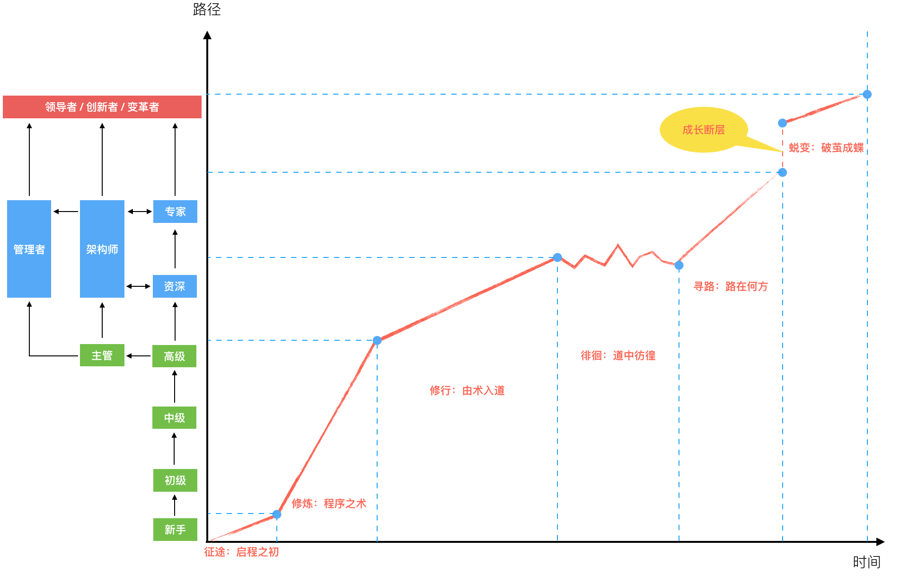
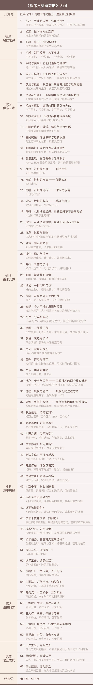

- 00 开篇词 程序行知：走在同样的路上，遇见自己的风景.md
- 01 初心：为什么成为一名程序员？.md
- 02 初惑：技术方向的选择.md
- 03 初程：带上一份技能地图.md
- 04 初感：别了校园，入了江湖.md
- 05 架构与实现：它们的连接与分界？.md
- 06 模式与框架：它们的关系与误区？.md
- 07 多维与视图：系统设计的思考维度与展现视图.md
- 08 代码与分类：工业级编程的代码分类与特征.md
- 09 粗放与精益：编程的两种思路与方式.md
- 10 炫技与克制：代码的两种味道与态度.md
- 11 三阶段进化：调试，编写与运行代码.md
- 12 Bug的空间属性：环境依赖与过敏反应.md
- 13 Bug的时间属性：周期特点与非规律性.md
- 14 Bug的反复出现：重蹈覆辙与吸取教训.md
- 15 根源：计划的愿景——仰望星空.md
- 16 方式：计划的方法——脚踏实地.md
- 17 检视：计划的可行——时间与承诺.md
- 18 评估：计划的收获——成本与收益.md
- 19 障碍：从计划到坚持，再到坚持不下去的时候.md
- 20 执行：从坚持到持续，再到形成自己的节奏.md
- 21 信息：过载与有效.md
- 22 领域：知识与体系.md
- 23 转化：能力与输出.md
- 24 并行：工作与学习.md
- 25 时间：塑造基石习惯（上）——感知与测量.md
- 26 时间：塑造基石习惯（下）——切割与构建.md
- 27 试试：一种“坏”习惯.md
- 28 提问：从技术到人生的习惯.md
- 29 偏好：个人习惯的局限与反思.md
- 30 写作：写字如编码.md
- 31 画图：一图胜千言.md
- 32 演讲：表达的技术.md
- 33 定义：阶梯与级别.md
- 34 晋升：评定与博弈.md
- 35 关系：学徒与导师.md
- 36 核心：安全与效率——工程技术的两个核心维度.md
- 37 过程：规模与协作——规模化的过程方法.md
- 38 思维：科学与系统——两类问题的两种思维解法.md
- 39 职业倦怠：如何面对？.md
- 40 局部最优：如何逃离？.md
- 41 沟通之痛：如何改变？.md
- 42 技术停滞：如何更新？.md
- 43 无法实现：困扰与反思.md
- 44 完成作品：理想与现实.md
- 45 代码评审：寄望与哀伤.md
- 46 人到中年：失业与恐惧.md
- 47 该不该去创业公司？.md
- 48 该不该接外包？.md
- 49 技术干货那么多，如何选？.md
- 50 技术分歧，如何决策？.md
- 51 技术债务，有意或无意的选择？.md
- 52 选择从众，还是唯一？.md
- 53 选择工作，还是生活？.md
- 54 侠客行：一技压身，天下行走.md
- 55 江湖路：刀剑相接，战场升级.md
- 56 御剑流：一击必杀，万剑归心.md
- 57 三维度：专业、展现与连接.md
- 58 三人行：前辈、平辈与后辈.md
- 59 三角色：程序员、技术主管与架构师.md
- 60 三视角：定位、自省与多维.md
- 61 工作之余，专业之外.md
- 62 跨越断层，突破边界.md
- 63 成长蓝图，进化跃迁.md
- 尾声 始于知，终于行.md
00 开篇词 程序行知：走在同样的路上，遇见自己的风景
你好，我是胡峰，从毕业到今天，在程序这条道路上已经走了十多年了，前期在金融、电信行业写写程序，最近七年在互联网行业从事电商应用相关系统的技术工作，也一路从程序员成长为了一名架构师。
今天这个时代，对于程序员来说是一个特别幸运的时代。每一个有追求的程序员都希望能获得快速的成长，但成长的道路没那么平坦和舒适，一路上充满了崎岖、障碍和迷雾。
同样，在我成长的道路上，我也走过很多弯路（更详细的故事，在后面的文章中会分享），这一路上我也有过迷茫，有过困惑。
如今，经历了这一路，当我回顾时，看见了一条渐渐清晰的成长路线。而幸运的是，在我行路的过程中，从七年前开始，我断断续续通过写作记录了这中间的所见、所感、所惑与所思。今年，我一直想找个时间去好好回顾并梳理下这条路线，而在一个适当的时机，遇到了 “极客时间”，所以这就给了我契机以专栏的形式来完成这件事。
在做这个专栏的过程中，我确信，一方面通过适时地驻足、回顾与梳理，它能帮助自己更好地认识到：我是如何从昨天走到今天的，并指导自己走向更好的明天。另一方面，程序（IT）行业还在高速发展，走在这条路上的人越来越多，而我对自身成长路径的反思与认知，想必也可以帮助到很多走在同样路上的人。
如今看，在这条路上我起步不算晚，但“永远有走在你前面的人”，当年他们留下的 “脚印” 和路径也给予了我很多的启发与指引。所以，这个专栏的意义在于，它提供了另一种可供参考的路标，正如题中所言：“走在同样的路上，遇见自己的风景。”
所以，这是一个关于程序员成长路径的专栏，它会围绕程序这个行业、程序员这个职业，画出一条清晰的成长路径。在这条路径上，有不同的成长阶段，会面临各种不同的问题与困惑。我会结合自身成长路径上面临的实际问题、设身处地去思索、分析、拆解这些问题，并给出可供参考的答案。
因为这是一个关于路径与行路的专栏，所以也就否定了另一面：它不会提供某一类具体的知识，并且由浅入深地去指导学习。
后面这一类知识，我称之为 “技能性知识”，需要你在日常的学习和工作中勤学苦练，练成之后你就会成为某一类问题的 “解答题高手”。
但前一类是关于路径选择和自我认知的知识，它能让你在成长的不同阶段重新认识自己，因为 “知” 从而改变你的 “行”。有时选择对了合适的路，比光顾着赶路要重要得多。
在这条成长的路径上，有期待、有坚持、有故事，也会有迷茫，以及最后穿越迷雾的曙光。而这个专栏的内容正是关于成长路径的，这条路径在我脑海里已形成了清晰的画面，现在我就把它画了出来，如下图：

这是一条成长线的表意图，有两个部分：图上左侧的路径，是匹配不同成长阶段，对应不同职业角色；右侧是一条由不同成长阶段组成的成长线，包括如下：
- 征途：启程之初
- 修炼：程序之术
- 修行：由术入道
- 徘徊：道中彷徨
- 寻路：路在何方
- 蜕变：破茧成蝶
“启程之初”，是你刚踏上程序之路面临的一些问题和感悟。“程序之术”，是你工作早期的主要内容，以修炼编程技能为主。除了编程写代码，还有很多其他的内容，这是另外一个维度的修行之路，也即 “由术入道”。
工作数年，成长到一定阶段，你可能会面临一个成长平台期的困扰，在此就进入了 “道中彷徨” 的徘徊期。这些困扰和彷徨很多都关乎选择，这期间是你发出 “路在何方” 之问的寻路期。最后，你坚定了道路，继续前行，前面的路上还有一道 “断层”，突破之后你将会蜕变，最终 “破茧成蝶”。
而此次专栏正是围绕这6个不同的阶段所写（详细目录如下图所示），为你的成长排忧解难。同时，为了保证内容的连贯性，我会把之前的几篇旧文稍作整理之后作为福利放到这里，你可以免费阅读。

最后，你将会收获什么？我想会有如下一些方面：
- 建立技术学习的体系框架与思维模型
- 梳理清晰的成长与进阶路线
- 扫清成长路上的迷茫与障碍
- 形成明确的自我定位与认知
它也许会是一扇观察的窗口，一张行路的地图，一瓶回血的苦药，一份认知的启发。其始于 “知”，需终于 “行”，在行走的道上，会有崎岖与气馁，希望能在这里，帮你找到未来的方向，给予指引；找到有效的方法，破除障碍；找到理想的自我，获得力量。
前路很长，而专栏的时间很短，希望我们有缘一起走上一程：走在同样成长的路上，遇见自己憧憬的风景。
© 2019 - 2023 Liangliang Lee. Powered by gin and hexo-theme-book.